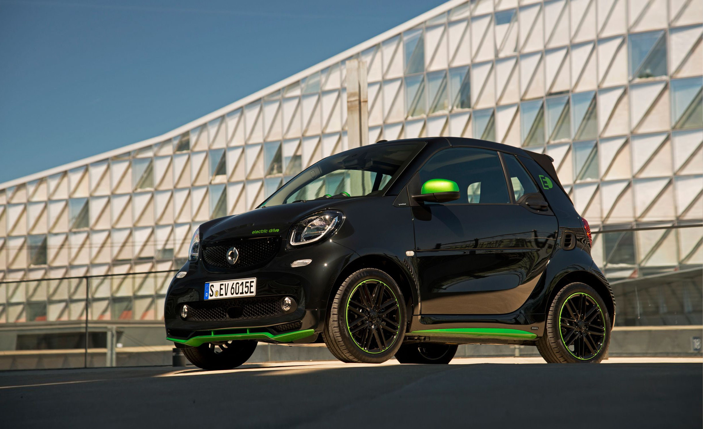

| Smart története kronológiai sorrendben (2007-ig) | |
| 1998 | Smart bemutatása. Kétajtós, zárt karosszéria, Pure és Pulse kivitel. Benzines turbómotorok: 0.6/45 vagy 54 LE. Hatfokozatú, kuplung nélküli szekvenciális váltó. |
| 1999 | Gazdagabb felszereltség. Passion kivitel. Soft-touch automataváltó. Módosított, kényelmesebb futómű, Trust Plus menetstabilizáló program. Közös-nyomócsöves dízel: 0.8/41 LE |
| 2000 | Vászontetős Cabrio bevezetése. |
| 2002 | Modellfrissítés, benzinmotor 50 és 61 Lóerővel. |
| 2003 | Modellfrissítés, új elnevezés: City Coupe és Cabrio. 0,7-es benzinmotor 50, 61 vagy 75 Lóerővel. Brabus tuning. |
| 2007 | Modellváltás, új Forfour |
Városra tervezve – most teljesen elektromosan. Egy smarttal mindenhová eljuthatsz a városban és környékén: az akár 159 km-es [2][3] hatótávolság biztosan elegendő lesz. Progresszív designja, félreismerhetetlenül smart. Ikonikus Külső markáns hűtőráccsal és extra LED-es fényszóróvál
